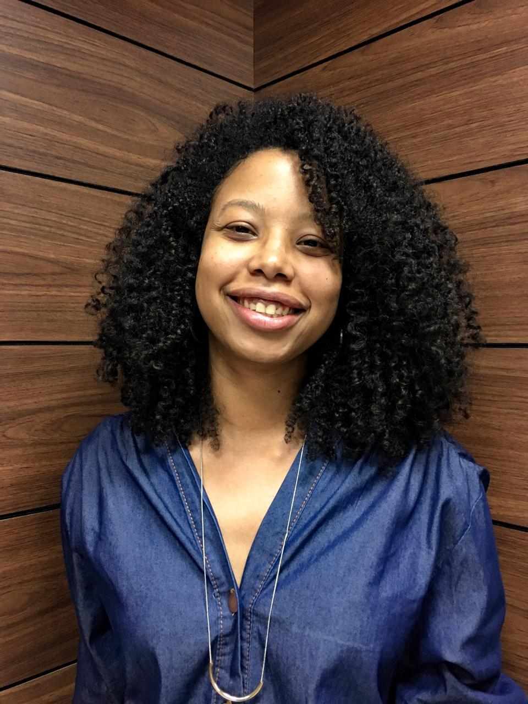
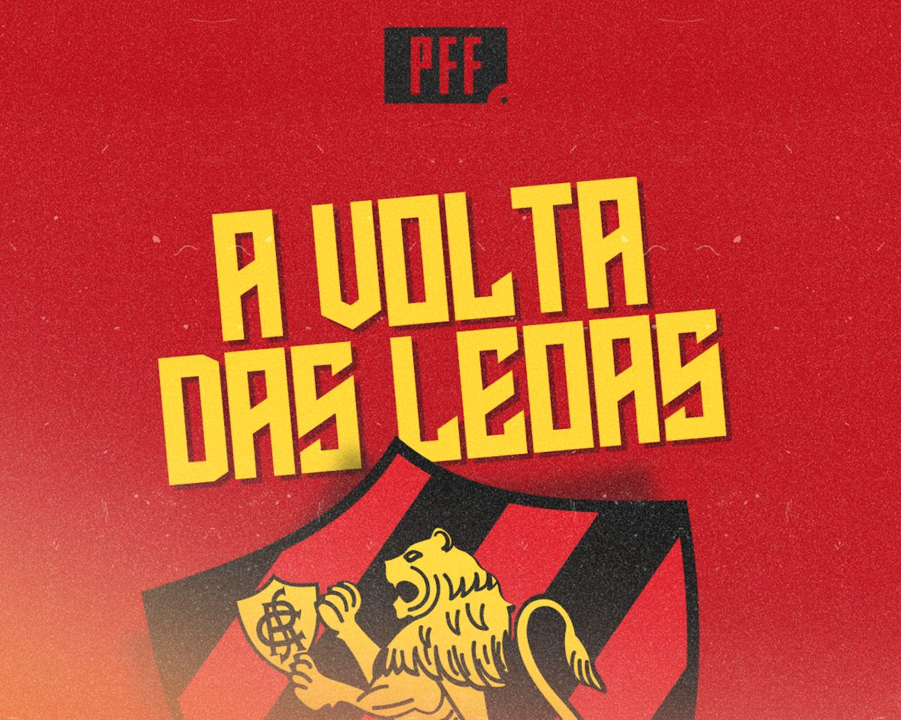
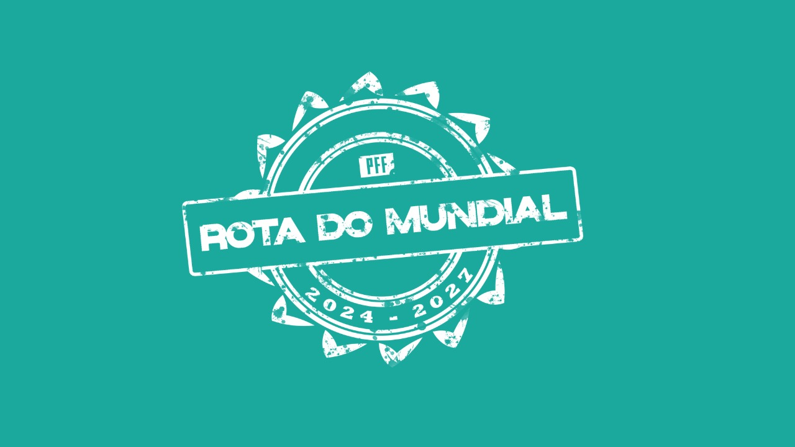

Jornalismo esportivo
Jornalista esportiva com foco em futebol masculino e feminino, criação de conteúdo, análise tática e produção audiovisual. Do campo à tela, com profundidade.

Sobre mim
Natural de Recife, Pernambuco, Bárbara Nunes construiu uma relação intensa com o esporte - primeiro, praticando diversos esportes na infância e adolescência, depois como comentarista e analista apaixonada pela tática e pela história que cada jogo carrega.
Através do jornalismo, busca amplificar as histórias de atletas e oferecer análises aprofundadas que vão além do placar: o contexto, a estratégia, as pessoas por trás de cada conquista.
Com passagem por plataformas como SportyNet, LiveBasketball BR, OneFootball, DSports e CBFTv, atua em transmissões ao vivo, produção de documentários e conteúdos em redes sociais, VTs e séries analíticas, além de locuções publicitárias para eventos de boxe na emissora DAZN.
Hoje concentra sua energia no futebol masculino e feminino, em clubes e seleções, acompanhando de perto a evolução do esporte em ligas como Bundesliga, La Liga, Ligue 1, Premier League e Serie A.
Experiência
Comentários e locução publicitária para campanhas institucionais da plataforma, cobrindo competições nacionais e internacionais.
Comentários em transmissões ao vivo da liga para a plataforma global de futebol.
Comentários em transmissões ao vivo da Copa Equador, Copa Argentina e Liga BetPlay Dimayor (Campeonato Colombiano).
Reportagem de quadra em transmissões do basquete brasileiro feminino ao vivo no canal do Youtube, ajudando a ampliar o alcance do esporte.
Responsável pela narração oficial das chamadas publicitárias para lutas em eventos de boxe transmitidos pela plataforma.
Participações como Comentarista e Apresentadora do PFF Debate, cobrindo o futebol feminino nacional e internacional, acompanhando a evolução do esporte e os preparativos para a Copa do Mundo em 2027.
Projetos

Documentário que acompanha o retorno do time feminino do Sport Club do Recife ao Campeonato Brasileiro A1. Uma história de superação, identidade e futebol nordestino.

Em parceria com Amanda Viana, projeto especial que acompanha a preparação da seleção brasileira feminina para a Copa do Mundo de 2027, sediada no Brasil.
Série de vídeos no YouTube com análises estatísticas e desdobramentos táticos das principais competições do futebol masculino - para quem quer entender o jogo a fundo.
Medium
No Instagram
Contato
Disponível para coberturas jornalísticas, comentários esportivos, análise tática, produção audiovisual e projetos especiais ligados ao futebol.